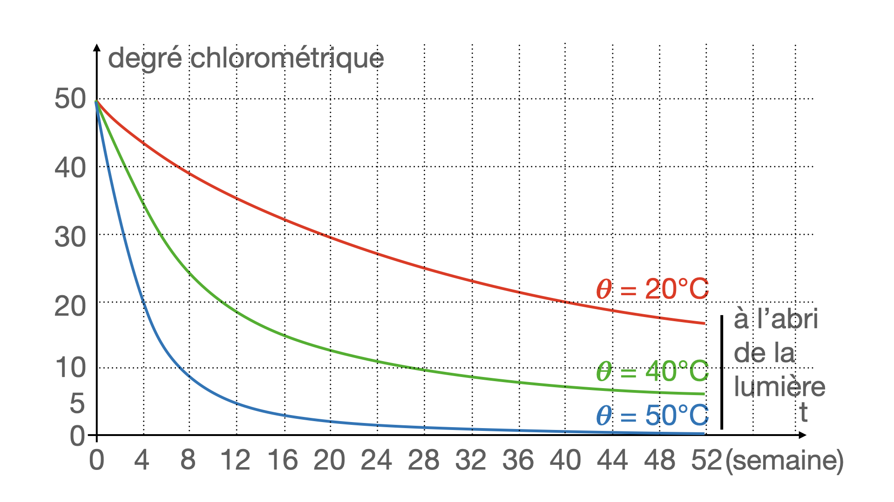
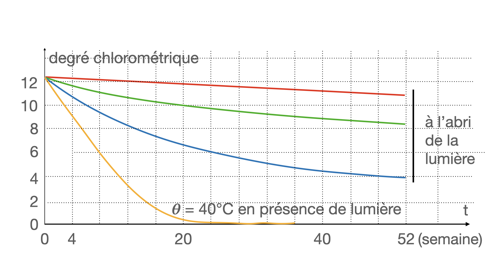

Connue depuis plus de deux siècles, l’eau de Javel reste un produit chimique d’utilisation courante, présent dans près de 95 % des foyers français. C’est un désinfectant très efficace contre les contaminations bactériennes et virales, en particulier celle du SIDA.
L’eau de Javel est une solution aqueuse contenant du chlorure de sodium, $\ce{Na+ + Cl-}$, de l’hypochlorite de sodium, $\ce{Na+ + ClO-}$, et de la soude $\ce{Na+ + HO-}$. Elle est fabriquée en dissolvant du dichlore gazeux dans une solution de soude selon la réaction :
$$\ce{
Cl2(g) + 2 HO-(aq) –> Cl-(aq) + ClO-(aq) + H2O
}$$
Définition du « Degré chlorométrique »
En France et dans les pays francophones, la concentration d’une eau de Javel est donnée en degrés chlorométriques : le degré chlorométrique d’une eau de Javel est égal au volume de dichlore gazeux, mesuré sous $\pu{101,3 kPa}$ et à $\pu{0 °C}$, nécessaire pour fabriquer un litre de solution.
-
Établir la relation entre la concentration molaire des ions hypochlorite et le degré chlorométrique d’une solution.
-
Application : l’industrie fabrique des extraits de Javel titrant 48° chlorométrique. Les produits courants titrent 12°. Calculer la concentration molaire en ions hypochlorite $\ce{ClO-}$ de ces deux produits.
Détermination du « Degré chlorométrique »
On utilise une méthode dite par retour décrite ci-après.
Protocole pour déterminer la concentration $C_1$ des ions hypochlorite contenus dans une eau de Javel à 12° :
- Préparer une burette avec une solution titrée de thiosulfate de sodium de concentration $C_2$ égale à $\pu{0,10 mol.L-1}$.
- Dissoudre $\pu{2 g}$ d’iodure de potassium dans environ $\pu{50 mL}$ d’eau distillée contenue dans un bécher de $\pu{250 mL}$ puis ajouter environ $\pu{10 mL}$ d’acide éthanoïque.
- Introduire un volume $V_1 = \pu{2,0 mL}$ de l’eau de Javel à doser. Agiter : une coloration brune apparaît.
- Ajouter progressivement la solution de thiosulfate jusqu’à ce que la solution soit jaune pâle. Ajouter alors quelques grains de thiodène, puis terminer le dosage goutte à goutte jusqu’à décoloration du mélange réactionnel.
Analyse du protocole
La première réaction met en jeu les couples $\ce{ClO- (aq) / Cl-(aq)}$ et $\ce{I2 (aq) / I-(aq)}$.
-
Écrire les demi équations d’oxydoréduction correspondantes et établir l’équation de cette réaction. À quoi est due la coloration brune qui apparaît ?
-
Quels sont les couples mis en jeu lors de la seconde réaction ? Établir l’équation de cette réaction.
-
Quelle verrerie utilise-t-on pour mesurer les $\pu{50 mL}$ d’eau distillée ? Les $\pu{2 mL}$ de l’eau de javel à doser ? Justifier.
-
Quel est le rôle du thiodène ?
-
Établir la relation entre le volume versé à l’équivalence, $V_{2E}$ et la concentration $C_1$.
Résultat d’une expérience
La décoloration intervient lorsqu’on a versé $\pu{19,9 mL}$ de la solution de thiosulfate.
- Calculer la concentration $C_1$ de l’eau de javel utilisée. Comparer à l’indication de l’étiquette.
Stabilité de l’eau de Javel
Afin d’étudier les conditions de stockage et de conservation des extraits et des eaux de Javel, on étudie la cinétique de la réaction de décomposition. Deux séries d’expériences ont permis de tracer les courbes ci-dessous.
 -
Quels sont les facteurs cinétiques que mettent en évidence ces résultats ?
-
Comparer les temps de demi-réaction, à 40 °C, d ‘un extrait à 48° et d’une eau de Javel à 12,5°.
-
Si l’on tolère une perte maximale de 10% du degré initial, quelle est, à 20 °C, la durée maximale de stockage d’un extrait à 48° ? Quelle est celle d’une eau de Javel à 12,5° ?